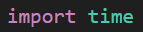
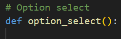
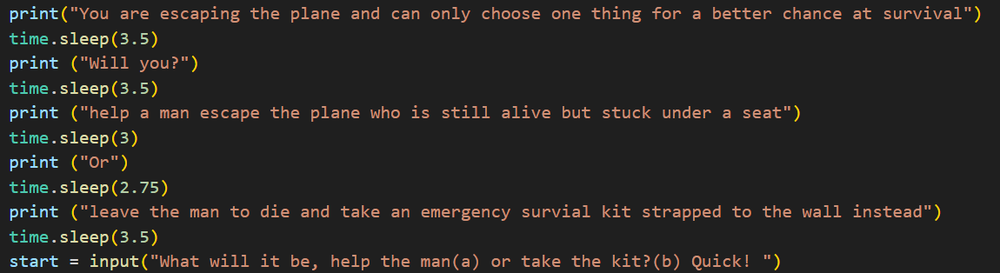
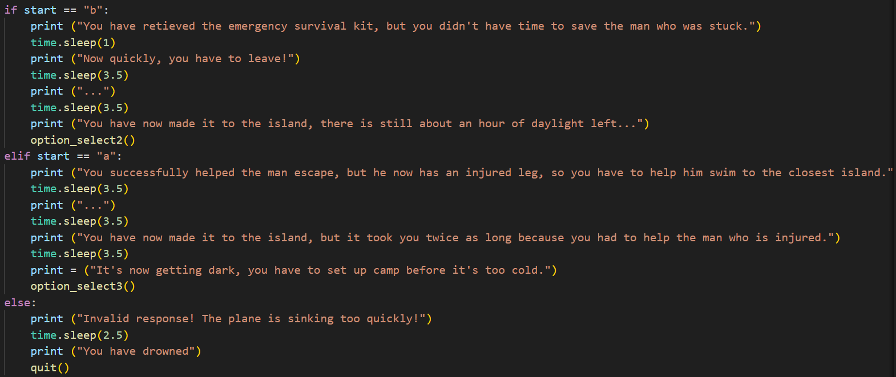
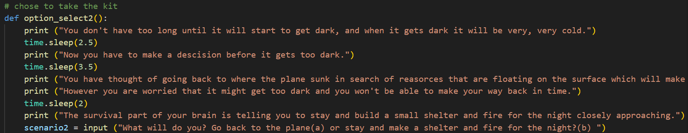
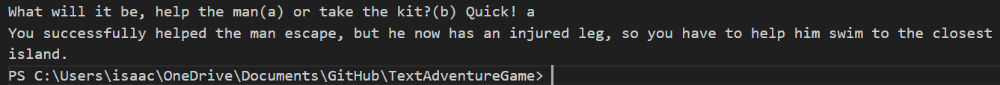
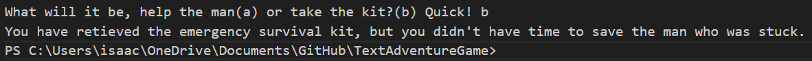
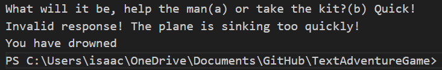

Below is the first stage of our text adventure game where I added comments/ headings to better sort out the structure of the code and distinguish between in development code and the final code/ where it will be tested

Then I added an import time function at the top of the code so that I could use the time.sleep() function between prints and inputs to add more effect in the user experience, and I also started the first option select with a define and name for the first option select.
 After that I started writing the first scenario, and the two options that the player can choose from.
Then I created the if, elif, and else statement after the input, which includes the continuation of the story and one output if they type nor a or b.
After I had completed the first option select and outputs I continued the same process, firstly the story using a combination of print and time.sleep funcitons. Then I added an input with two options to choose from, being a and b. After that I then added the if, elif, and else statement depending on what they inputed.
| Test/Input | Expectation | Output |
|---|---|---|
| "a" | Helps the man |  |
| "b" | Takes the survival kit |  | "" | invalid response text output, quits game |  |
Person 1: Not really, I think that it is the easiest way to respond.
Person 2: No I think that it is fine and easy to play.
Person 1: I don't think so, apart from maybe more story so the game isn't so short.
Person 2: I can't think of anything that important that could be changed apart from the way some thing are described.
*Nothing changed